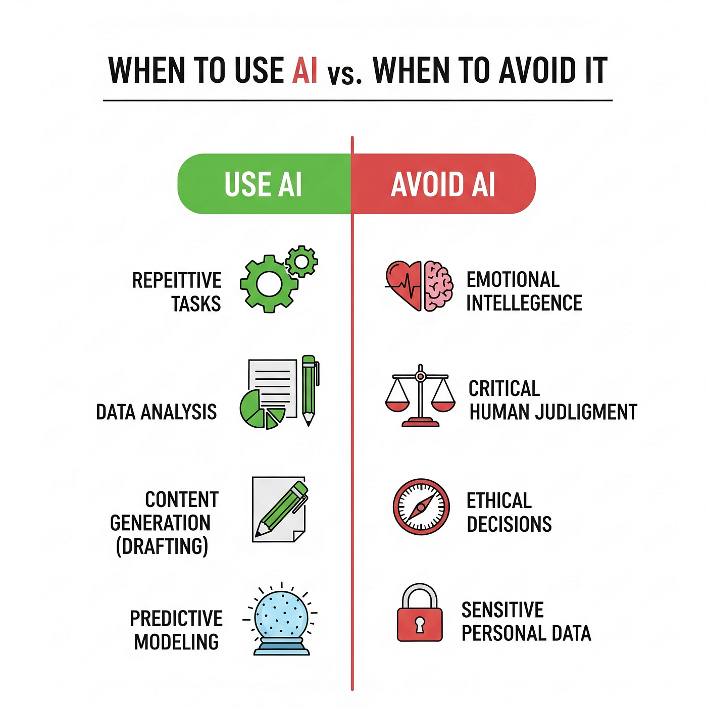

AI: Responsible Use and Ethics
Welcome back to The CompPendium! Last time, we explored how AI fits into computer science—what it is, how it learns, and where it shows up in our everyday lives. But today, we’re tackling something just as important: how we use AI responsibly.
AI is powerful. It can analyze medical images, predict weather patterns, or recommend your next favorite song. But with great power (yes, Spider-Man fans, we’re saying it again) comes great responsibility. Because AI doesn’t just affect computers—it affects people.
The Human Side of Technology
Let’s start with something simple: AI systems don’t have opinions or emotions. They make decisions based on data—data that comes from us. That means if the data we give them contains patterns of bias, unfairness, or inequality, the AI might accidentally learn and repeat those same patterns.
For example, imagine training an AI hiring tool using data from a company that’s historically hired more men than women. Even if no one tells the AI to discriminate, it might “learn” that pattern and start favoring male candidates. The result? A digital system that unintentionally continues a very human problem.
This is why ethics in AI matters. We have to think about the impact of our creations—not just what they can do, but what they should do.
What Do We Mean by “Bias”?
Bias in an AI system is a systematic tendency to produce results that are unfairly skewed toward or against certain groups, ideas, or outcomes. Importantly, bias isn’t the AI “having an opinion” – it’s the patterns it learned from the data, from design choices, or from how we evaluate its success. If those patterns reflect historical inequality or incomplete sampling, the model may amplify them.
Some common kinds of bias you’ll hear about:
- Sampling Bias: The training data leaves out (or under‑represents) parts of the population. Example: a voice model trained mostly on adult voices performs worse for children.
- Historical Bias: Even “accurate” data encodes past unfair patterns (e.g., prior hiring decisions). The model learns yesterday’s inequities and projects them forward.
- Measurement Bias: The way features were recorded is inconsistent or noisier for certain groups (poor lighting in images, different devices, dialect differences).
- Labeling Bias: Human annotators bring subjective judgments (e.g., what counts as “aggressive” or “professional”).
- Algorithmic / Model Bias: The modeling approach or objective (loss function) optimizes overall accuracy but hides performance gaps across subgroups.
- Evaluation Bias: We test models on convenient benchmarks that don’t reflect real, diverse use cases.
No single checklist magically “removes” bias. Instead, we build a continuous mitigation loop that starts at problem definition and never really ends.
How Can We Mitigate Bias?
- Clarify the real-world objective: Define who the system serves and what a “fair” outcome looks like before collecting data.
- Diversify data sourcing: Intentionally include varied demographics, contexts, and edge cases; avoid relying solely on legacy historical sets.
- Document data lineage: Use "datasheets" for datasets to record origin, collection method, limitations, and known gaps.
- Audit and measure fairness: Evaluate subgroup metrics (precision/recall, false positive rate) and fairness metrics (e.g., demographic parity, equal opportunity). Look for large performance deltas, not just aggregate accuracy.
- Balance or reweight when appropriate: Techniques like stratified sampling, oversampling under‑represented classes, or instance weighting can reduce skew.
- Use model cards: Summarize intended use, limitations, and known failure modes so downstream users deploy responsibly.
- Iterate with diverse review: Bring in perspectives from different backgrounds—domain experts, impacted communities, accessibility advocates—early and regularly.
- Apply privacy & security best practices: De‑identify sensitive fields, minimize personally identifiable info, and respect consent—ethical handling builds trust.
- Stress test & red team: Actively probe for worst‑case behaviors (adversarial inputs, demographic edge cases) before release.
- Monitor in production: Bias can emerge over time; set up dashboards to watch drift, subgroup performance, and feedback signals.
- Provide user recourse: Offer clear channels for users to challenge or appeal automated decisions.
Think of bias mitigation as gardening: you don’t weed once and declare victory. You keep observing, pruning, and re‑balancing so the system stays healthy and fair as it grows.
Privacy and Data Use
Here’s another big one: privacy. Many AI models learn from massive amounts of data—sometimes data about real people. That can include photos, writing samples, voice clips, or even medical information. It’s our job as developers and users to make sure this data is collected and used responsibly.
That means getting consent before using personal information, storing it securely, and removing identifying details whenever possible. Some laws, like the GDPR in Europe, already enforce these rules—but as technology grows, so does the need for global standards that protect users everywhere.
Transparency and Accountability
AI often feels like magic—but it’s really just math. Still, that “magic” can make it easy for people to forget there’s a human behind every system. That’s why transparency is key: people should know when they’re interacting with AI, and they should be able to understand how decisions are made.
For instance, if an AI denies someone a loan or flags their resume, that person should have the right to know why. This concept is called algorithmic transparency. It helps build trust—and it reminds us that AI doesn’t operate in a vacuum. Humans are still responsible for the outcomes.
AI and Creativity: A Shared Space
AI can create art, music, and even code, which raises another ethical question: who owns the result? If an AI-generated painting looks like a famous artist’s work, is that fair use or plagiarism? What if a songwriter uses AI to create lyrics—who’s the real “author”?
There’s no single answer yet, but what’s clear is that AI should be a partner, not a replacement. It can inspire creativity, streamline processes, and spark new ideas—but the imagination and intent behind those creations still belong to humans.
AI for Good
It’s easy to focus on the risks, but there’s also incredible potential for good. AI can help scientists track climate change, improve accessibility tools for people with disabilities, detect misinformation, and even support mental health. When guided responsibly, AI becomes a force that amplifies human strengths instead of replacing them.
Many organizations now emphasize the idea of “responsible AI.” That means building systems that are fair, explainable, transparent, and beneficial to society. In short: technology that makes life better, not harder.
The Future Is Shared
As AI continues to grow, so does our responsibility to shape its path. Computer scientists, policymakers, artists, educators—everyone has a role to play in deciding how AI is used. Ethics isn’t an afterthought; it’s part of the design process itself.
So as you keep learning about coding, algorithms, and all the fun stuff that makes computers tick, remember: the best developers don’t just ask, “Can I build this?” They ask, “Should I?”
Technology doesn’t have morals—but we do. And that’s what makes computer science not just a science, but a human story.
See you next time on The CompPendium!